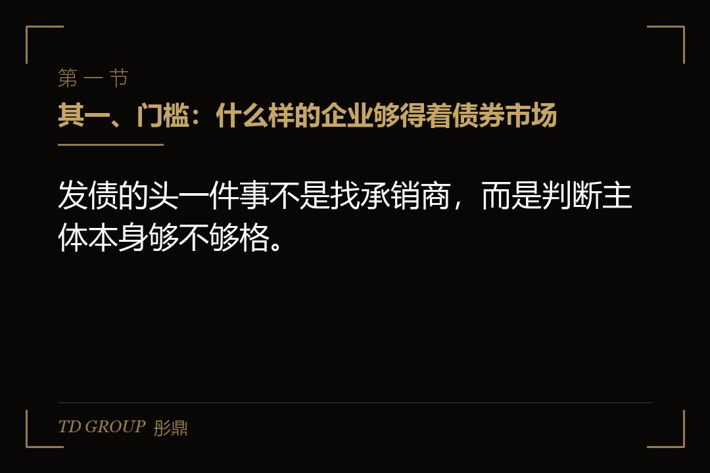
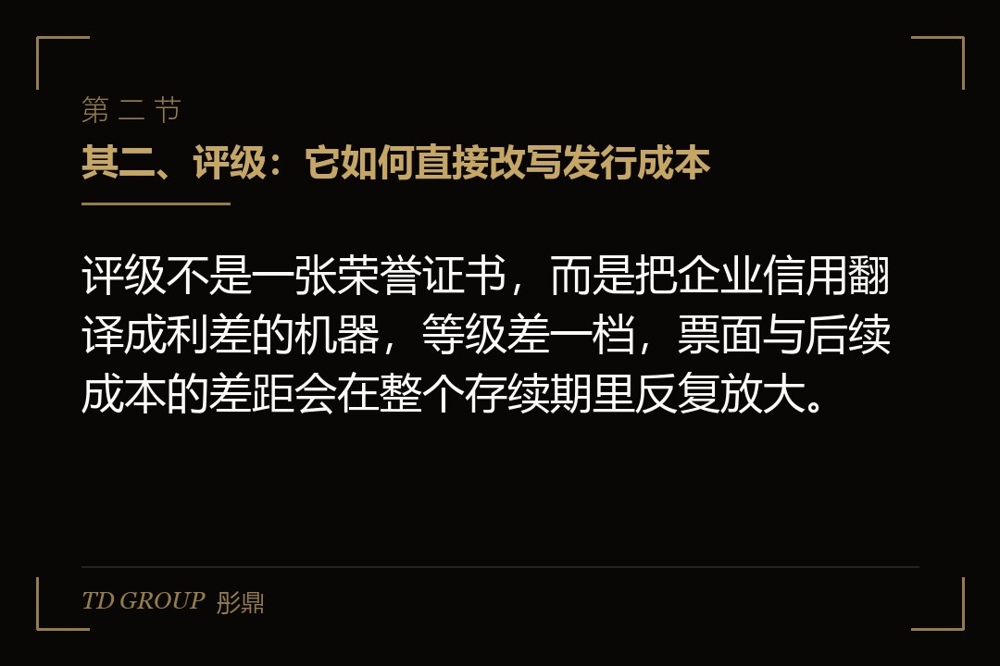
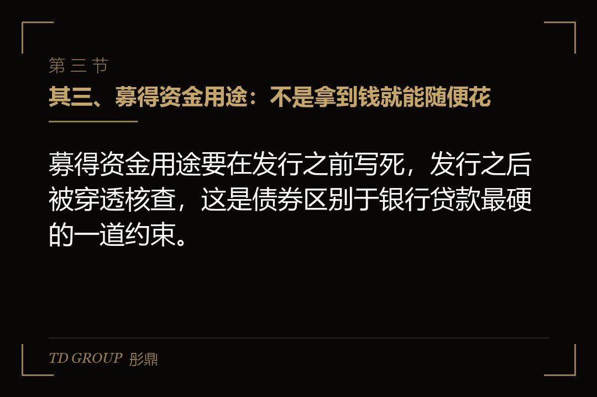
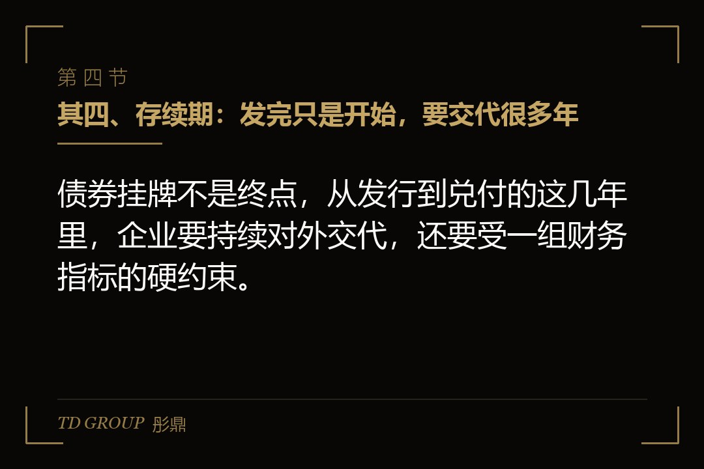
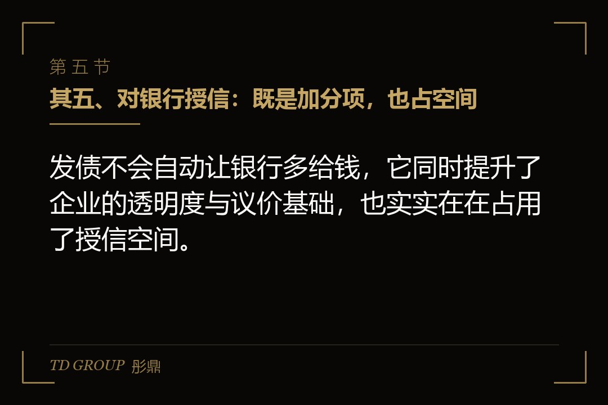
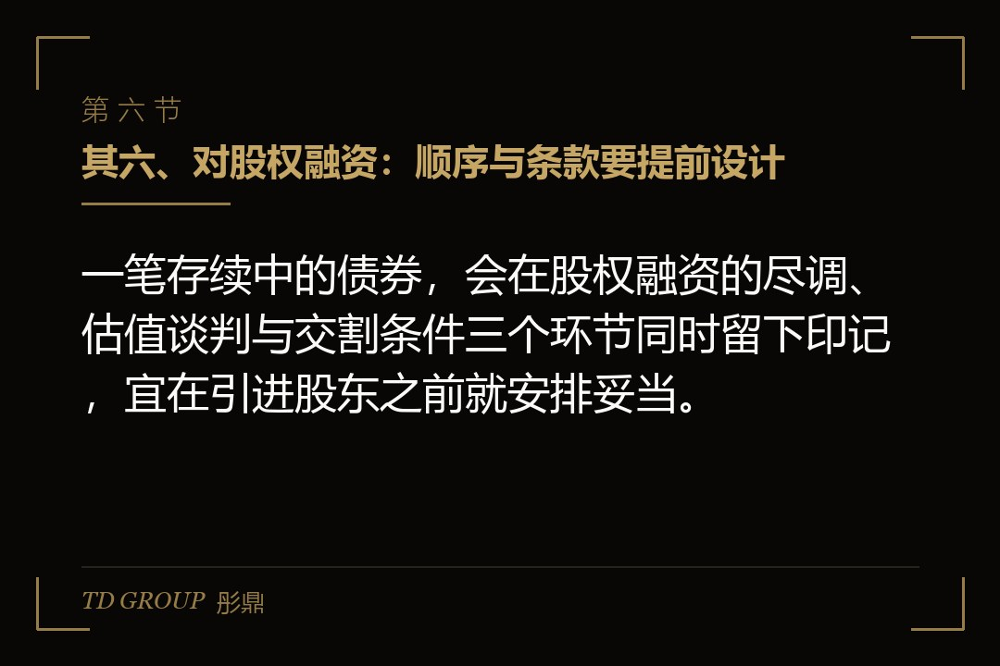

其一、门槛：什么样的企业够得着债券市场

结论先行：发债的头一件事不是找承销商，而是判断主体本身够不够格。假设一家做工业密封件的制造企业，年营收十来亿元，银行授信已用去七八成，想为新产线锁定三年期资金——它能不能发，取决于净资产规模、利润连续性与可分配利润能否覆盖一年利息这几项硬口径。
这些数字不是企业自己说了算。监管部门对不同券种设置了净资产、净利润、可分配利润足以支付债券一年利息等入门要求，具体门槛按现行监管口径与发行时市场情况确定。审核环节还会看利润是否连续、是否主要来自主营业务，一次性资产处置带来的收益通常不被计入。
规模之外是结构。资产负债率是否处在同行业合理区间、经营现金流是否连续为正、有息债务里短期部分占多少，都会被反复问询。同样是十亿元量级的净资产，一家现金流稳定、负债结构均衡的企业，与一家靠短债滚续维持周转的企业，拿到批文的难度完全不同。
还有一道程序性门槛常被低估，就是申报材料的完备性。发行文件、审计报告、法律意见书与评级报告需要彼此勾稽一致，任何一处数据打架都会引来反馈问询。企业往往要提前半年到一年把账务、关联往来与产权瑕疵理顺，否则时间成本会远超预期。
还有一条容易被忽略，就是担保与增信。自身资质稍弱的企业，常由专业担保机构提供增信，或由母公司、关联方出面担保，以此抬升债项等级。代价是要付一笔担保费，且担保方会提出反担保要求，实质占用的仍是企业自身的资产腾挪空间。本节锚点：准入门槛。
其二、评级：它如何直接改写发行成本

结论先行：评级不是一张荣誉证书，而是把企业信用翻译成利差的机器，等级差一档，票面与后续成本的差距会在整个存续期里反复放大。
评级机构看什么，企业可以提前对表：经营规模与行业地位、收入与利润的稳定性、经营现金流对债务的覆盖能力、负债结构与到期分布、治理规范性与财务透明度、股东背景与外部支持力度。这些判断大多来自三年一期的财务数据与现场访谈，临近发行才做准备基本无效。
评级也并非一评了之。发行之后机构会做定期跟踪与不定期回访，经营指标明显恶化时可能被列入观察名单甚至下调等级。等级下调的代价不只是以后发债变贵，存量债券也可能牵动契约条款，因此存续期内维持指标稳定本身就是一项财务工作。
成本怎么构成，值得算清楚。债券票面大致由同期限无风险利率、信用利差与流动性溢价三部分叠加，此外还有承销费、评级费、律师费、审计费与登记托管等费用。等级上调一档，信用利差随之收窄，一年省下的利息往往超过全部中介费用之和。
假设一家环保工程公司，主体资质处在中等水平，同一笔三年期债券在有专业机构担保与无担保两种安排下，票面差距可能相当明显；同时有无担保还会决定它能进入哪些机构的投资白名单，直接影响发行是否顺利。本节锚点：信用利差。
其三、募得资金用途：不是拿到钱就能随便花

结论先行：募得资金用途要在发行之前写死，发行之后被穿透核查，这是债券区别于银行贷款最硬的一道约束。
允许的用途通常集中在几类：项目建设与设备购置、偿还有息债务、补充流动资金。三类各有比例与证明材料要求，需要在发行文件里逐项列明金额、投向与进度安排，并接受受托管理人与监管的持续核查。
不能碰的红线同样清晰。资金不得流向违反国家产业政策的领域，不得以委托贷款等形式转借他人，不得用于购买理财产品等财务性投资，也不得用于填补过往的经营亏损。一旦违反用途约定，可能触发提前回售或加速到期条款。
用途约束还带有一层时间含义。项目建设类用途要求资金投放节奏与工程进度匹配，闲置期间只能停留在约定范围之内的临时安排；偿还有息债务类用途通常要求提供拟偿还借款的清单与合同，且不得用于偿还已经逾期、或原本用途就不合规的债务。
假设一家医药流通企业，想着先把募得资金买成短期理财、等产线动工再赎回，这条路走不通。更常见的合规做法是设立募得资金专户，按工程进度或还款计划分批划付，每笔划款都留凭证。用途确需变更的，要提交持有人会议审议。本节锚点：用途穿透。
其四、存续期：发完只是开始，要交代很多年

结论先行：债券挂牌不是终点，从发行到兑付的这几年里，企业要持续对外交代，还要受一组财务指标的硬约束。
披露义务分两条线。一条是定期的：年报、半年报与季度财务数据按时公开。另一条是触发式的：新增大额借款、重大诉讼、对外担保、控制权变动、资产受限等事项须临时公告。受托管理人则负责持续跟踪，必要时开展现场核查。
契约条款更需留意。常见的有资产负债率承诺、限制新增大额非经营性资金往来、限制分红比例、交叉违约条款与事先约束条款。假设一家食品企业在存续期内资产负债率突破了发行文件约定的阈值，即便当期利息照付，也可能触发投资者的回售选择权或追加担保要求。
对财务负责人来说，最现实的变化是工作节奏。银行借款只需对一家银行交代，公开债券则要同时对市场、受托管理人、监管与评级机构交代，年报审计口径怎么定、临时公告由谁判断触发、持有人会议如何召集，都需要有专人承接并预留内部审批时间。
还有持有人会议与受托管理制度。涉及期限调整、变更用途、增减担保等事项，都要召集持有人会议表决。对老板来说，这意味着一笔债背后多了一批有组织、有表决权的债权人，重大决策要多走一道沟通程序。本节锚点：存续期约束。
其五、对银行授信：既是加分项，也占空间

结论先行：发债不会自动让银行多给钱，它同时提升了企业的透明度与议价基础，也实实在在占用了授信空间。
正面影响来自三处。其一是信息披露带来的可信度，经审计的公开报表与独立评级报告降低了银行的尽调成本，部分银行会主动上调授信额度或给出更优定价。其二是期限结构改善，长期资金替换掉一部分短期借款之后，银行看到的是短债滚续压力下降。
负面影响同样现实。公开债务计入有息负债，资产负债率抬升，会挤压企业在该行的授信测算空间。债券契约里的限制性条款，比如对新增借款的约束或对某项财务指标的维持要求，也可能与银行新授信的条件相互掣肘。若债券设置了资产抵押或担保安排，更是直接占用了原本可用于银行贷款的担保资源。
实际操作中，多数企业会在发行之前与主办银行沟通一遍，把债券规模、期限、担保安排与未来两年的提款计划讲清楚，避免发完之后才发现授信额度被挤占。本节锚点：授信腾挪。
其六、对股权融资：顺序与条款要提前设计

结论先行：一笔存续中的债券，会在股权融资的尽调、估值谈判与交割条件三个环节同时留下印记，宜在引进股东之前就安排妥当。
先说加分项。能成功发债，本身就是财务规范性与信息透明度的一次外部背书。拟上市或准备引入机构投资者的企业，在尽调中拿出经公开披露检验过的报表与评级报告，能显著减少财务核查的往返成本。
再说约束项。债券契约里常见的控制权变更条款，会把实际控制人股权结构变动列为需要事先同意或触发回售的事项。这意味着引进新股东、老股转让或者重组持股架构，都要先读一遍发行文件，必要时提前与受托管理人沟通。
顺序上另有一个细节。若企业已经确定要在两年内申报上市，债券的期限与兑付安排应尽量避开申报期与审核期，避免集中兑付压力落在关键窗口，也不要让新增的有息负债改变申报期的财务指标口径。
最后说定价。有息负债规模与债务成本会直接进入投资者的估值模型，债券的期限与集中兑付年份会改变未来现金流的形状。理性的做法是先确定资金用途与偿付安排，再决定先发债还是先做股权，而不是两件事同时推进、互相牵扯。本节锚点：融资顺序。